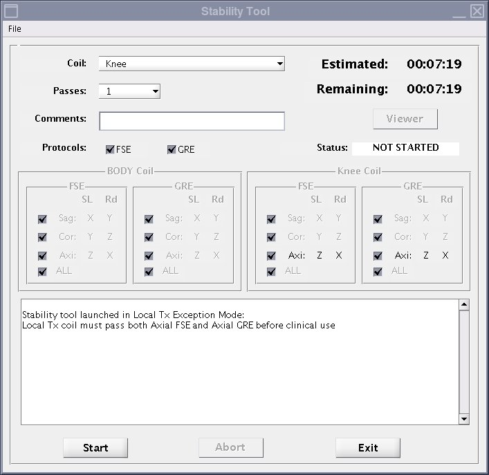

This tool measures and shows the magnitude drift, phase offset and echo shift using Fast Spin Echo and Gradient Resolved Echo sequences for either the body coil or local coils. Local TR coil scans are disabled until this task is completed.
Prerequisites
The system will not permit scans with local TR coils until the local Tx stability test (FSE and GRE stability) passes for at least one local TR coil. If the customer has two or more local TR coils, it is only necessary to test one.
If you try to scan without passing this test, it will not be possible to use local TR coils to scan.
Procedure
From the CSD, go to Image Quality tab > SPT Local TX Test Menu, and click Click here to start this tool.
The Stability Tool window shows.
Click Start.
Figure 1. Stability tool interface

The test results and plots will show automatically after the test is completed.
After you close the plots, they are no longer available.